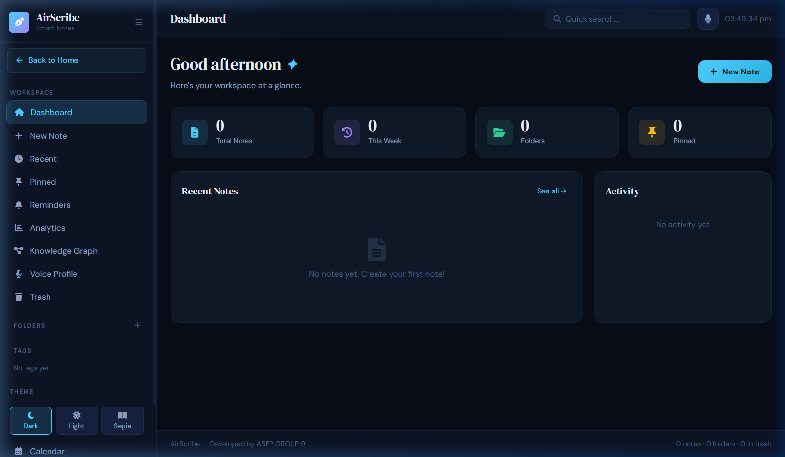

From spoken words to searchable knowledge. Capture conversations, create thoughtful summaries, and keep every important detail within reach.
Conversations move quickly. Important details disappear just as easily. MeetScribe AI helps turn those fleeting moments into notes, summaries, and knowledge you can revisit.
Turn spoken input and conversations into written records.
VOICE → TEXTCondense information into clear summaries and useful takeaways.
WORDS → CLARITYKeep notes organized and make important information easier to find.
NOTES → KNOWLEDGEEvery conversation has a rhythm. MeetScribe AI helps preserve its words and meaning in a form you can revisit.
MeetScribe AI brings notes, transcripts, summaries, and important takeaways into a workspace designed to help you return to what matters.

Reviewed core platform deliverables and speech attribution benchmarks. Confirmed encrypted note storage deployment and semantic query capabilities.
Convert spoken input into written notes where supported.
INPUT / REAL-TIMEReview captured conversation text where supported.
RECORD / WORD-LEVELCondense long notes into concise summaries where supported.
SYNTHESIS / EXECUTIVEFind relevant information across your notes where supported.
RETRIEVAL / SEMANTICDownload notes in the formats supported by the current application.
OUTPUT / MULTI-FORMAT